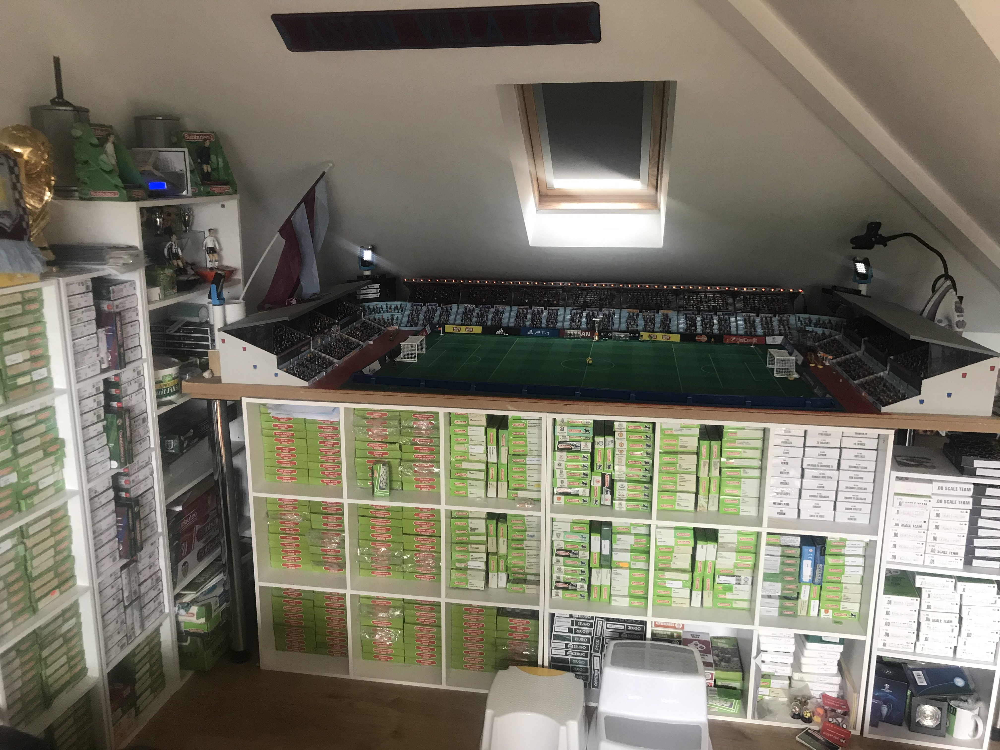

Customized Villa Park
Villa Park is steeped in tradition with many fans feeling it has a magical atmosphere on game day, hence being voted best ground in the premiership in a recent study. That is why I decided to make my own version hope you like it.

Aston's Teams
With subbuteo having a mini revival I took it up on myself to start collecting teams again as I was a big lover of the game as a child. I currently own about 500 teams I believe maybe more and will continue to search for teams I do not poccess. My two young boys have since taken an interest in my hobby and will hopefully keep the game going through the generations
Aston's Trophies
I am trying to buy as many original trophies as I can and also have bought the newer metal versions which are really nicely made.